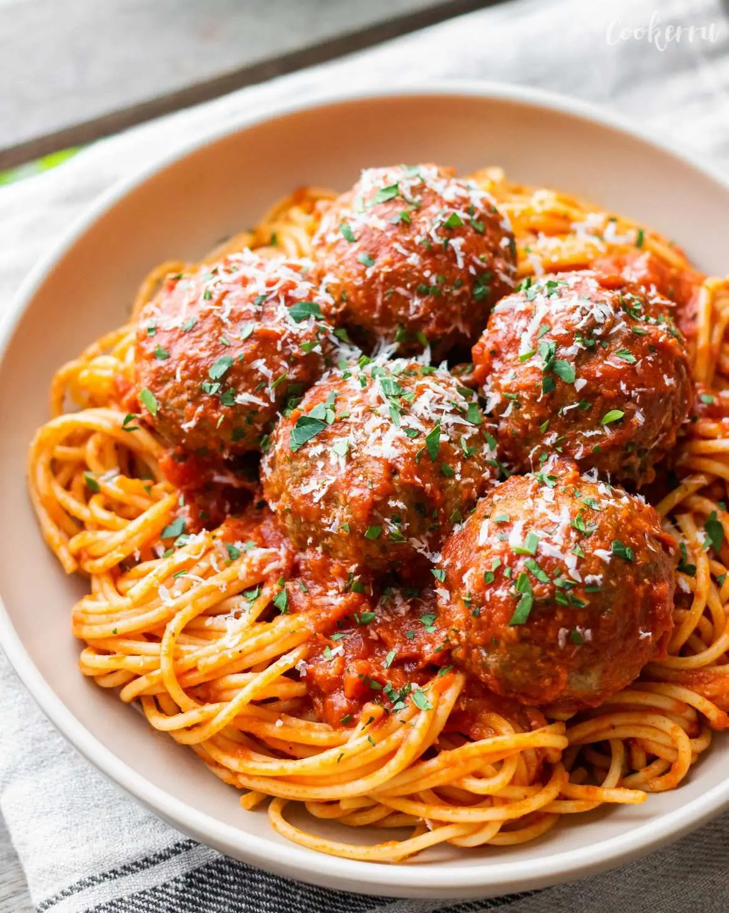

The World Famous Meatball Recipe!

Description:
These easy oven-baked Italian meatballs are incredibly tender and juicy
with irresistible flavors that will have you craving for more. Made with ground
beef, onion, garlic, parmesan cheese, and parsley, these meatballs are seasoned
to perfection and ready to be served in just 30 minutes!
Ingredients:
- Ground beef
- Italian breadcrumbs
- Milk
- Egg
- Parmesan cheese
- Onion & garlic
- Parsley
- Salt + pepper
Steps to make the world famous meatballs:
- Preheat the oven to 400°F
- In a large mixing bowl, add Italian bread crumbs and milk.
Combine well and set aside while preparing the other ingredients,
for at least 5 minutes.
- Add ground beef, onion, garlic, egg, salt, black pepper,
parmesan cheese, and parsley to the breadcrumb mixture, and mix with your
hands until just combined. Do not overmix.
- Portion onto the prepared baking sheet (using a cookie or ice cream
scoop will make it easier). Wet your hands with water, and roll meatballs
into 2" diameter balls.
- Bake for about 18-20 minutes, or until the meatballs have reached an
internal temperature of 165˚F (74°C). Remove from oven and drain off any
excess fat. Serve with your favorite sauce and enjoy!